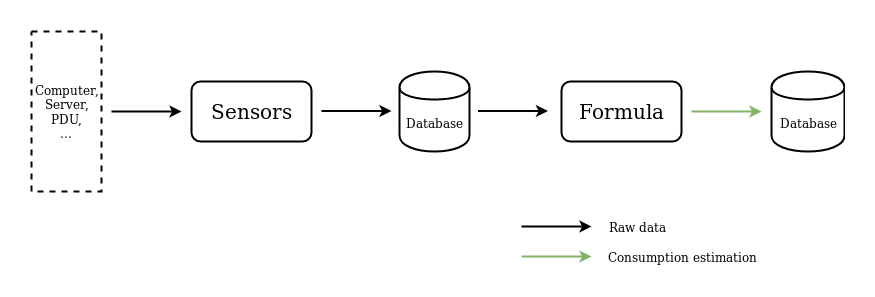

PowerAPI - How it works ?
Power meter Architecture
A power meter is a set of two components, a sensor and a formula, used to produce an estimation of the power consumption of a monitored software.
The sensor collects raw data correlated with the power consumption of the software. The formula is a model that use the collected data to compute the power consumption. Both of them are connected by a database that is used to transfer data from the sensor to the formula.
The two next sub-sections present how a sensor and a formula work and how they should be used.

Sensor
A sensor is an independent software that collects raw data correlated with the power consumption of monitored software.
Data are collected by querying the hardware's machine that hosts the monitored software. The sensor must be executed on the same machine as the monitored software. The data are collected throughout the duration of the software. For this reason, the sensor must operate in parallel.
Collected data are stored in an external database to make the data available to the formula. This database may be hosted on an other machine.
Usage
Because they collect from different hardware, each sensor are very different from one another. Refer to each sensor documentation to know how to use them.
Formula
A formula is an independent software that use model to compute the power consumption of monitored software from the data collected by the sensor.
We implement each formula with a common Command Line Interface (CLI) to connect it to a sensor and to configure its output. In this section, we present how the connection between the sensor and the formula works. We also present the common formula's CLI.
Sensor Connection
A formula is connected to a sensor via a database (e.g MongoDB). The sensor writes the collected data to the database and the formula reads this data from the database.
There are two connection modes:
"Stream" mode where data is read from the database while the sensor is collecting it
"Post-mortem" mode which analyses the data already collected by the sensor in a past monitoring phase.
The default mode of a formula is the "Post-mortem" mode, use the command line
argument -s to enable the "Stream" mode.
Command line interface
The presented CLI is common to all formulas of the PowerAPI toolkit.
Replace FORMULA_NAME with the name of the used formula in the
following commands.
Install and Launch the formula
All formulas are available on pypi and docker-hub.
You can directly launch a docker container containing the formula with the following command:
docker run powerapi/FORMULA_NAME args ...
To use the formula without docker, you can install it with pip:
pip3 install FORMULA_NAME
Then run it with python(>=3.7):
python3 -m FORMULA_NAME args ...
Command line arguments
You can launch every formula with this common arguments, extra arguments could be added at the end of the command line (it depends on the formula used):
(python3 -m/docker run) FORMULA_NAME input_mongo_uri input_db input_collection output_mongo_uri output_db output_collection
with:
input_mongo_uri: uri to the mongoDB used by the hwpc-sensor to store its output data. Use the following formatmongodb://MONGO_ADDRESS:MONGO_PORTinput_db: database used by the hwpc-sensor to store its output datainput_collection: collection used by the hwpc-sensor to store its output dataoutput_mongo_uri: uri to the mongoDB used to store the power consumption data. Use the following formatmongodb://MONGO_ADDRESS:MONGO_PORToutput_db: database used to store the power consumption dataoutput_collection: collection used to store the power consumption data
Optional arguments
List of the optional arguments used to enable some special mode:
-s: connect to the database with "stream mode"-v: verbose mode (for debug)
Formula specific arguments
Some formula may use specific arguments. These arguments are described on their formula documentation. Just place them after the common CLI arguments